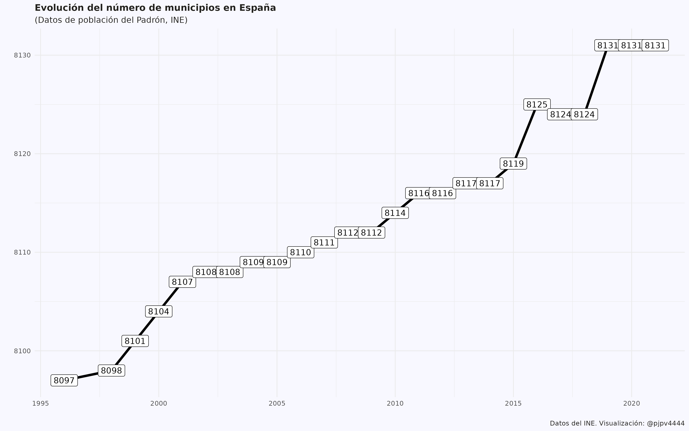

Utilizando datos de los censos históricos y del Padrón, se realizan visualizaciones de la evolución del número de municipios españoles en el tiempo, desde el censo de 1842 hasta la actualidad.
Introducción
En el post anterior describí el proceso para obtener los datos de los censos históricos del INE. Los censos proporcionan datos de población a nivel municipal1, de forma que ahora utilizaré esos datos para analizar como ha evolucionado el número de municipios en España en el tiempo.
Objetivo: ver la evolución del número de municipios en España.
El municipio en España es una entidad administrativa de nivel local que puede agrupar a una o varias localidades; por ejemplo el municipio de Pancrudo agrupa cuatro localidades2.Los municipios no son entidades fijas, sino que por distintos motivos hay municipios que desaparecen y otros que aparecen. Por ejemplo, Torremolinos existió como municipio hasta el censo de 1920, para desaparecer en el de 1930 por su integración en el municipio de Málaga, para posteriormente, en el censo de 1991, volver a ser municipio tras segregarse de Málaga.
El número de municipios cambia en el tiempo.
¿Cuantos municipios han existido en España?
Debería ser una pregunta fácil de responder pero no lo es; como ejemplo este documento. Hasta donde yo sé, no existe en España un registro del que pueda obtenerse el número de municipios que han existido en el tiempo; así que, trataré de dar una respuesta utilizando los datos de los Censos históricos y del Padrón.
No es una pregunta fácil.
Lo que si puedo decir es que, con datos del Padrón de 2021, actualmente hay en España 8.131 municipios.
Actualmente hay 8.131 municipios.
El INE proporciona datos de 18 censos de población, el primero en 1842 y el último en 2011. En el censo de 1842 hay datos de 11.291 municipios, mientras que en el de 2021, hay 8.116; es decir, una reducción de 3.175 municipios a lo largo de este periodo. Con esta información parece que la respuesta debería ser 11.291, pero no es así, la dinámica de creación y desaparición de municipios es más compleja, hay municipios como Torremolinos, que desaparecen y vuelven a aparecer.
En los 18 censos que proporciona el INE podemos encontrar un total de 11.910 códigos municipales únicos, así que parece que han existido en ese periodo el mismo número de municipios. Digo parece porque la respuesta no es tan clara, ya que hay casos como la localidad Gatova, que cambió su código municipal de 12066 a 46092 al incorporarse a la provincia de Valencia, desde la de Castellón, en el censo de 2001. ¿Son municipios diferentes? Bueno, podemos pensar que sí, ya que tienen códigos municipales diferentes.
Así que, según mis cuentas y utilizando datos de los Censos3, han existido4 en España 11.910 municipios.
Con datos de los Censos, de 1842 a 2011, han existido 11.910 municipios.
Sin embargo, el último censo publicado es de 2011 y estamos en 2022, así que se han podido crear más municipios desde 2011 hasta la actualidad. Efectivamente, si utilizamos los datos del Padrón5, desde 2011 a 2022 se crearon en España 16 municipios que no existían antes, por lo que la respuesta final es: han existido 11.926 municipios en Spain.
Añadiendo los datos del Padrón, ese número aumenta hasta los 11.926 municipios.
Como actualmente, con datos del Padrón de 2021, existen 8.131 municipios, eso quiere decir que desde el censo de 1842 se ha reducido el número de municipios en 3.795.
Evolución del número de municipios (Censos)
Utilizando los datos de los 18 censos de población disponibles en la web del INE, la evolución del número de municipios puede verse en Figure 1.
Figure 1: Evolución del número de municipios (datos de los Censos). Juro que mejoraré el gráfico!!!!
En Figure 1 se aprecia que desde 1842 se ha reducido el número de municipios, principalmente entre el censo de 1842 y el de 1933, y en los censos de 1979 y 1981. De las explicaciones no sé mucho: 1) el censo de 1842 fue, como leí no sé donde, un censo extraño, y 2) A partir de 1970 se hizo un esfuerzo politico por reducir el número de municipios …..
El Figure 1 propòrciona información, pero la tabla siguiente ?@tbl-muni se amplia un poco esa información, apreciandosé que del censo de 1842 al siguiente se redujo el número de municipios en 1933; pero esa reducción, como se aprecia en ?@tbl-nn-muni-censo , es resultado de que desaparecieron 2.199 municipios mientras que aparecieron, o se crearon, 266.
Para ahondar un poco más en la dinámica de la evolución del número de municipios en el tiempo, en la ?@tbl-muni se muestra más información.
Si en lugar de los datos de los Censos, utilizamos los datos del Padrón (1996, 1998-2021) la evolución del número de municipios en España quedaría como:

Figure 2: Evolución del número de municipios (datos del Padrón) Juro que mejoraré el gráfico!!!
El Figure 2 muestra que a partir de 1996, el número de municipios ha aumentado de forma muy suave pero continuada, hasta llegar a los 8.131 municipios en 2021.
Curiosidades
En Figure 1 y Figure 2 se muestran datos sobre la evolución del número de municipios, y hay 2 años (2001 y 2011) en que tenemos cifras para el número de municipios procedentes de 2 fuentes: Censos y padrón. ¿Coincidirán? No . Ya diré porqué. Es “logico”, bueno, puede pasar.
R & flowers (a quarto blog) //AÚN en PRUEBAS// - Evolución del número de municipios en España (1842-2021)R & flowers (a quarto blog) //AÚN en PRUEBAS//
---title: "Evolución del número de municipios en España (1842-2021)"date: 2022-07-13categories: [datos INE, Censos históricos, municipios]#css: assets/my_css_file.css draft: falseimage: "imagenes/thumbnail.png"---Utilizando datos de los censos históricos y del Padrón, se realizan visualizaciones de la evolución del número de municipios españoles en el tiempo, desde el censo de 1842 hasta la actualidad.<br>## IntroducciónEn el [post anterior]() describí el proceso para obtener los datos de los censos históricos del INE. Los censos proporcionan datos de población a nivel municipal[^1], de forma que ahora utilizaré esos datos para analizar como ha evolucionado el **número de municipios en España** en el tiempo.[^1]: Para obtener datos de población a nivel de localidad o núcleos de población hay que acudir al [Nomenclátor del INE](https://www.ine.es/nomen2/index.do).::: column-margin**Objetivo**: ver la evolución del número de municipios en España.:::El municipio en España es una **entidad administrativa de nivel local** que puede agrupar a una o varias localidades; por ejemplo el [municipio de Pancrudo](https://es.wikipedia.org/wiki/Pancrudo) agrupa cuatro localidades[^2].Los municipios no son entidades fijas, sino que por distintos motivos **hay municipios que desaparecen y otros que aparecen**. Por ejemplo, [Torremolinos](https://www.ine.es/intercensal/intercensal.do?search=1&error1=Debe+introducir+un+nombre+de+municipio.&error2=Debe+introducir+al+menos+3+caracteres.&cmbTipoBusq=0&textoMunicipio=Torremolinos&btnBuscarDenom=Consultar+selecci%C3%B3n) existió como municipio hasta el censo de 1920, para desaparecer en el de 1930 por su integración en el municipio de Málaga, para posteriormente, en el censo de 1991, volver a ser municipio tras segregarse de Málaga.[^2]: Una localidad es una división administrativa o territorial formada por un núcleo de población con identidad propia, ya sea esta una aldea, pueblo o ciudad::: column-marginEl número de municipios cambia en el tiempo.:::## ¿Cuantos municipios han existido en España?Debería ser una pregunta fácil de responder pero no lo es; como ejemplo [este documento](https://www.hacienda.gob.es/Documentacion/Publico/SGT/CATALOGO_SEFP/100_Variaciones-INTERNET.pdf). Hasta donde yo sé, no existe en España un registro del que pueda obtenerse el número de municipios que han existido en el tiempo; así que, trataré de dar una respuesta utilizando los datos de los Censos históricos y del Padrón.::: column-marginNo es una pregunta fácil.:::Lo que si puedo decir es que, con datos del Padrón de 2021, **actualmente hay en España 8.131 municipios**.::: column-marginActualmente hay 8.131 municipios.:::El INE proporciona datos de **18 censos** de población, el primero en 1842 y el último en 2011. En el censo de 1842 hay datos de 11.291 municipios, mientras que en el de 2021, hay 8.116; es decir, una reducción de 3.175 municipios a lo largo de este periodo. Con esta información parece que la respuesta debería ser 11.291, pero no es así, la dinámica de creación y desaparición de municipios es más compleja, hay municipios como [Torremolinos](https://www.ine.es/intercensal/intercensal.do?search=1&error1=Debe+introducir+un+nombre+de+municipio.&error2=Debe+introducir+al+menos+3+caracteres.&cmbTipoBusq=0&textoMunicipio=Torremolinos&btnBuscarDenom=Consultar+selecci%C3%B3n), que desaparecen y vuelven a aparecer.En los 18 censos que proporciona el INE podemos encontrar un total de **11.910 códigos municipales únicos**, así que parece que han existido en ese periodo el mismo número de municipios. Digo parece porque la respuesta no es tan clara, ya que hay casos como la localidad Gatova, que cambió su código municipal de 12066 a 46092 al incorporarse a la provincia de Valencia, desde la de Castellón, en el censo de 2001. ¿Son municipios diferentes? Bueno, podemos pensar que sí, ya que tienen códigos municipales diferentes.Así que, según mis cuentas y utilizando datos de los Censos[^3], han existido[^4] en España **11.910 municipios**.[^3]: En realidad según los códigos municipales únicos que he encontrado en la web de los censos históricos del INE[^4]: En realidad debería decir han sido censados.::: column-marginCon datos de los Censos, de 1842 a 2011, han existido 11.910 municipios.:::Sin embargo, el último censo publicado es de 2011 y estamos en 2022, así que se han podido crear más municipios desde 2011 hasta la actualidad. Efectivamente, si utilizamos los datos del Padrón[^5], desde 2011 a 2022 se crearon en España 16 municipios que no existían antes, por lo que la respuesta final es: **han existido 11.926 municipios** en Spain.[^5]: Utilizo datos de población del Padrón continuo 1996 y 1998 a 2021::: column-marginAñadiendo los datos del Padrón, ese número aumenta hasta los **11.926 municipios**.:::Como actualmente, con datos del Padrón de 2021, existen 8.131 municipios, eso quiere decir que desde el censo de 1842 se ha reducido el número de municipios en 3.795.## Evolución del número de municipios (Censos)Utilizando los datos de los 18 censos de población disponibles en la web del INE, la evolución del número de municipios puede verse en @fig-nn-muni-censo.quarto-executable-code-5450563D```r#| echo: false#| label: fig-nn-muni-censo#| fig-cap: "Evolución del número de municipios (datos de los Censos). \n Juro que mejoraré el gráfico!!!!"name_of_plot <-"plot_nn_muni_censo.png"rutita <-paste0("./imagenes/", name_of_plot)knitr::include_graphics(rutita)```En @fig-nn-muni-censo se aprecia que desde 1842 se ha reducido el número de municipios, principalmente entre el censo de 1842 y el de 1933, y en los censos de 1979 y 1981. De las explicaciones no sé mucho: 1) el censo de 1842 fue, como leí no sé donde, un censo extraño, y 2) A partir de 1970 se hizo un esfuerzo politico por reducir el número de municipios .....El @fig-nn-muni-censo propòrciona información, pero la tabla siguiente @tbl-muni se amplia un poco esa información, apreciandosé que del censo de 1842 al siguiente se redujo el número de municipios en 1933; pero esa reducción, como se aprecia en @tbl-nn-muni-censo , es resultado de que desaparecieron 2.199 municipios mientras que aparecieron, o se crearon, 266.Para ahondar un poco más en la dinámica de la evolución del número de municipios en el tiempo, en la @tbl-muni se muestra más información.```{r, include = FALSE}my_folder_post <-"/posts/2022-07-13_censos-historicos_02/"my_script <-"02_script_crear-tabla-01.R"path_file <-paste0(here::here(), my_folder_post, my_script)``````{r, echo = FALSE, eval = TRUE, results = "hold"}knitr::spin_child(path_file)``````{r, include = FALSE}#| label: tbl-muni#| tbl-cap: "Evolución del número de municipios (datos de los Censos)."table_ok```## Evolución del número de municipios (Padrón)Si en lugar de los datos de los Censos, utilizamos los datos del Padrón (1996, 1998-2021) la evolución del número de municipios en España quedaría como:quarto-executable-code-5450563D```r#| echo: false#| label: fig-nn-muni-padron#| fig-cap: "Evolución del número de municipios (datos del Padrón) \n Juro que mejoraré el gráfico!!!"name_of_plot <-"plot_nn_muni_padron.png"rutita <-paste0("./imagenes/", name_of_plot)knitr::include_graphics(rutita)```El @fig-nn-muni-padron muestra que a partir de 1996, el número de municipios ha aumentado de forma muy suave pero continuada, hasta llegar a los 8.131 municipios en 2021.## CuriosidadesEn @fig-nn-muni-censo y @fig-nn-muni-padron se muestran datos sobre la evolución del número de municipios, y hay 2 años (2001 y 2011) en que tenemos cifras para el número de municipios procedentes de 2 fuentes: Censos y padrón. ¿Coincidirán? No . Ya diré porqué. Es "logico", bueno, puede pasar.```{r, include = FALSE}my_folder_post <-"/posts/2022-07-13_censos-historicos_02/"my_script <-"02_script_crear-tabla-01.R"path_file <-paste0(here::here(), my_folder_post , my_script)source(path_file, local = knitr::knit_global())#sys.source(path_file, envir = knitr::knit_global())table_ok```## BiblioBiblio:- artículo PAIS: <https://elpais.com/elpais/2017/02/02/media/1486066904_389254.html> La mitad de municipios puede desaparecer
Para obtener datos de población a nivel de localidad o núcleos de población hay que acudir al Nomenclátor del INE.↩︎
Una localidad es una división administrativa o territorial formada por un núcleo de población con identidad propia, ya sea esta una aldea, pueblo o ciudad↩︎
En realidad según los códigos municipales únicos que he encontrado en la web de los censos históricos del INE↩︎

![]()